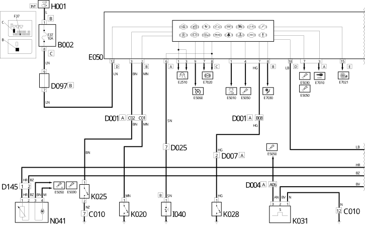
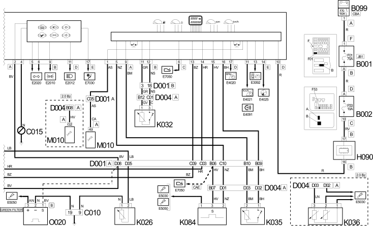
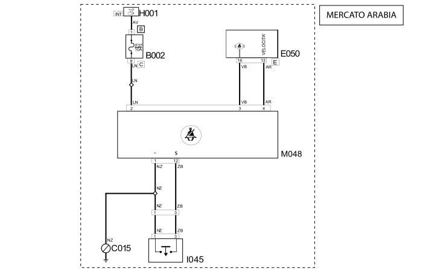

E4010 INSTRUMENT PANEL WIRING DIAGRAM
- Path
- Electrical equipment > 1 ELECTRICAL FUNCTIONS > E40 INSTRUMENT PANEL > E4010 INSTRUMENT PANEL > E4010 INSTRUMENT PANEL WIRING DIAGRAM
- Kind
- topic
- Applies to
- all engines; all production periods
- Interactive page
- https://sloeber94.github.io/elrnDB-fDct/en/#/244001831
Applies to: all engines; all production periods
Wiring Diagram



Components
Component code | Description | Reference to the assembly |
|---|---|---|
JUNCTION UNIT | 5,505A | |
JUNCTION UNIT UNDER DASHBOARD | - | |
MAXI FUSE BOX ON BATTERY | - | |
LEFT FRONT EARTH | - | |
DASHBOARD EARTH, DRIVER'S SIDE | - | |
FRONT/DASHBOARD COUPLING | - | |
FRONT/ENGINE COUPLING | - | |
ALTERNATOR COUPLING | - | |
DASHBOARD/LEFT REAR COUPLING | - | |
SHORT CIRCUITING COUPLING | - | |
FRONT/CILC (FUEL LEVEL GAUGE CIRCUIT) COUPLING | - | |
INSTRUMENT PANEL | 5,560B | |
IGNITION SWITCH | ||
SWITCH CONTROL PANEL | 5,505A | |
HANDBRAKE SWITCH | - | |
LEFT BRAKE PAD WEAR SENSOR (SWITCH) | - | |
BRAKE FLUID LEVEL SENSOR (SWITCH) | - | |
Engine coolant level sensor | - | |
ENGINE OIL PRESSURE SENSOR | - | |
WATER IN DIESEL FILTER SENSOR | - | |
ENGINE OIL LEVEL SENSOR | 1,084A | |
DO NOT USE SENDER UNIT | - | |
ENGINE COOLANT TEMPERATURE SENSOR/SENDER UNIT | - | |
SPEEDOMETER SENSOR | - | |
ENGINE MANAGEMENT ECU | - | |
FUEL PUMP AND EPIC LEVEL GAUGE | 1,040A | |
Diesel heating resistance | - |
Topics linked from this page (28)
- 5520A IGNITION SWITCH
- B001 JUNCTION UNIT
- B002 JUNCTION UNIT UNDER DASHBOARD
- B099 MAXI FUSE BOX ON BATTERY
- C010 LEFT FRONT EARTH
- C015 DASHBOARD EARTH, DRIVER'S SIDE
- D001 FRONT/DASHBOARD COUPLING
- D004 FRONT/ENGINE COUPLING
- D007 ALTERNATOR COUPLING
- D025 DASHBOARD/LEFT REAR COUPLING
- D097 SHORT CIRCUITING COUPLING
- D145 FRONT/CILC (FUEL LEVEL GAUGE CIRCUIT) COUPLING
- E050 INSTRUMENT PANEL
- H001 IGNITION SWITCH
- H090 SWITCH CONTROL PANEL
- I040 HANDBRAKE SWITCH
- K020 LEFT BRAKE PAD WEAR SENSOR (SWITCH)
- K025 BRAKE FLUID LEVEL SENSOR (SWITCH)
- K026 Engine coolant level sensor
- K028 ENGINE OIL PRESSURE SENSOR
- K031 WATER IN DIESEL FILTER SENSOR
- K032 ENGINE OIL LEVEL SENSOR
- K035 DO NOT USE SENDER UNIT
- K036 ENGINE COOLANT TEMPERATURE SENSOR/SENDER UNIT
- K084 SPEEDOMETER SENSOR
- M010 ENGINE MANAGEMENT ECU
- N041 FUEL PUMP AND EPIC LEVEL GAUGE
- O020 Diesel heating resistance